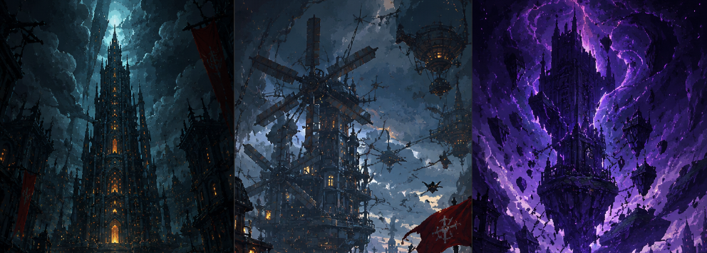

Guide Title
Updated July 2026
Introduction
Below is the recommended endgame PvE build based on current testing and community optimization. This setup prioritizes overall damage output and is suitable for most players looking to maximize boss performance. The images below show the recommended choices for each category, including Avatar, Skills, Pet, Relics, Specialization, Runes, and Emblem. While some alternatives may perform similarly depending on your progression, this setup provides the best all-around balance for consistent DPS.
Note: As future updates introduce new content and balance changes, these recommendations may be adjusted accordingly.
Recommended Build
- Avatar
- Skill
- Pet
- Relic
- Specialization
- Rune
- Emblem



Tips
Add tips here.